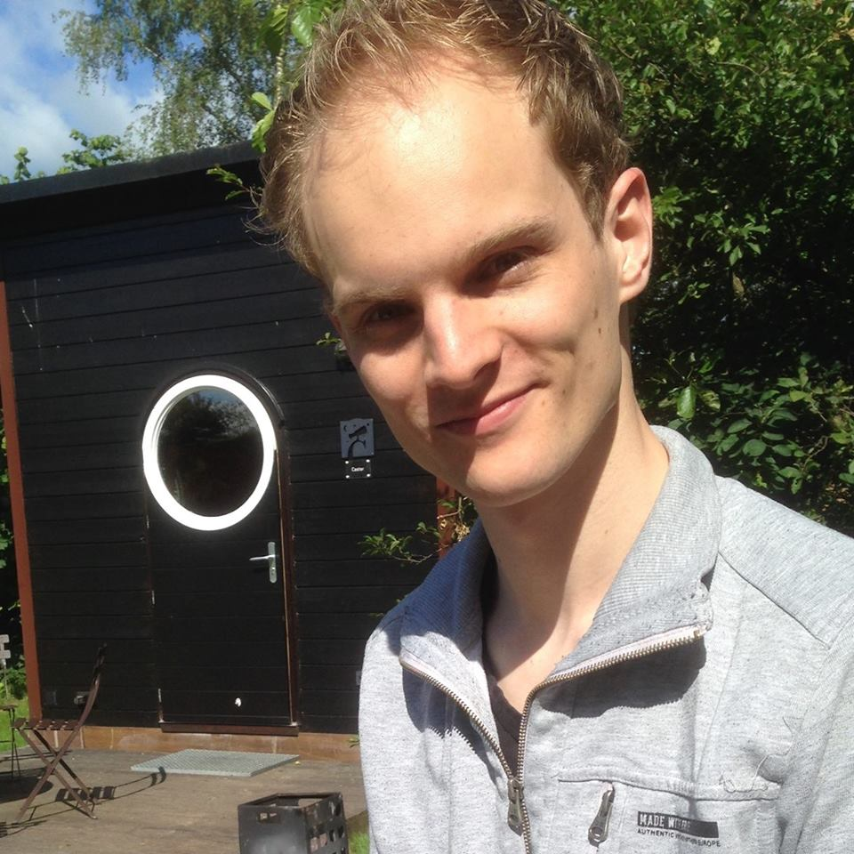
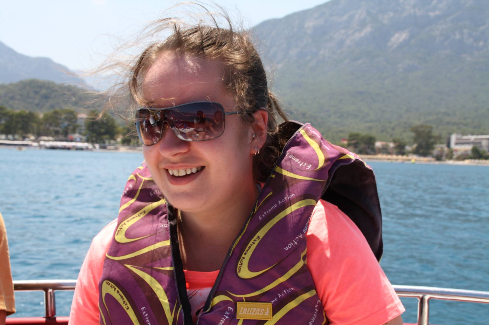

Over Bewust Kopen
Men is vandaag de dag steeds meer bezig met bewuste keuzes maken als het gaat om voeding. Hoe kun je er zeker van zijn dat wanneer je een product koopt, er ook niets in zit wat je niet wil of mag eten. Wanneer eet je iets wat nu echt vegetarisch is? Welke producten voldoen nu 100% aan het kenmerk vegetarisch? Vaak wordt er bij producten vanuit gegaan omdat hier geen vleesproducten of bijvoorbeeld bouillon in zit dat deze ook vegetarisch zijn. Dit terwijl er in drop gelatine verwerkt zit, wat gemaakt wordt van botten van dieren, dus niet 100% vegetarisch. Zo ook het drinken voor kinderen waar geen suiker, maar wel glucose aan toegevoegd is en dus niet zo gezond is als gepretendeerd wordt. Door het grote aanbod en onduidelijkheid over de herkomst van producten en ingrediënten is er een kennisachterstand ontstaan.
Bewust kopen vind het belangrijk dat het eenvoudig wordt om echt te weten wat er nu in de producten zit. Of deze voldoen aan je eetpatroon en of deze eigenlijk wel voldoen aan wat het label vermeld. Wij willen duidelijkheid bieden over waar die e-nummers op het etiket nu voor staan en vandaan komen. Of als er suikervrij op de verpakking staat, maar er wel fructose in het product zit deze wel zo gezond is als gepresenteerd. Op deze manier willen we mensen kennis meegeven over de producten die ze kopen.Bewust Kopen wil assisteren om de keuze die u maakt echt een bewuste keuze te laten zijn.
Het team
Bewust kopen bestaat op dit moment uit 3 jonge ondernemers:
- 
Koen Kukken
- 
Stephanie van der Heijden
-
Freek de Groen